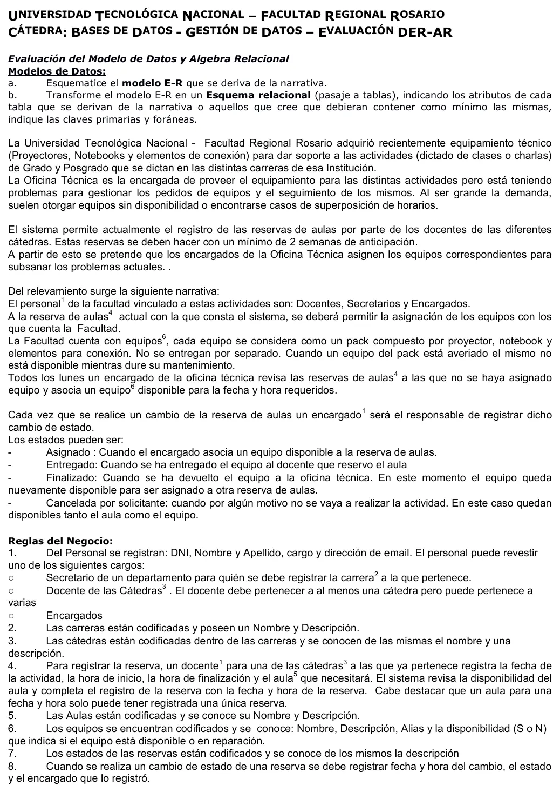

Préstamos de equipos
Final, 10/02/2025
Enunciado


Propuesta de respuesta
Respuesta no verificada. La propuso Luta Studios con inteligencia artificial y ningún docente la revisó. Puede tener errores.
a) Modelo E-R
El mín:máx pegado a una entidad dice cuántas de esa entidad le tocan a una de la otra punta, como en los DER resueltos del Drive. Tocá el dibujo para verlo en pantalla completa.
b) Pasaje a tablas
La jerarquía se pasa completa, con una tabla por subclase.
personal (dni, nombre, apellido, cargo, email)
CP -> dni
carrera (codigo, nombre, descripcion)
CP -> codigo
secretario (dni, codigo_carrera)
CP -> dni
CF(dni) -> personal(dni) NN
CF(codigo_carrera) -> carrera(codigo) NN
docente (dni)
CP -> dni
CF(dni) -> personal(dni) NN
encargado (dni)
CP -> dni
CF(dni) -> personal(dni) NN
catedra (codigo_carrera, codigo, nombre, descripcion)
CP -> codigo_carrera, codigo
CF(codigo_carrera) -> carrera(codigo) NN
docente_catedra (dni_docente, codigo_carrera, codigo_catedra)
CP -> dni_docente, codigo_carrera, codigo_catedra
CF(dni_docente) -> docente(dni) NN
CF(codigo_carrera, codigo_catedra) -> catedra(codigo_carrera, codigo) NN
aula (codigo, nombre, descripcion)
CP -> codigo
equipo (codigo, nombre, descripcion, alias, disponibilidad)
CP -> codigo
reserva (codigo_aula, fecha_actividad, hora_inicio, hora_fin, fecha_hora_reserva, dni_docente, codigo_carrera, codigo_catedra, codigo_equipo)
CP -> codigo_aula, fecha_actividad, hora_inicio
CF(codigo_aula) -> aula(codigo) NN
CF(dni_docente, codigo_carrera, codigo_catedra) -> docente_catedra(dni_docente, codigo_carrera, codigo_catedra) NN
CF(codigo_equipo) -> equipo(codigo) NULL
estado (codigo, descripcion)
CP -> codigo
reserva_estado (codigo_aula, fecha_actividad, hora_inicio, fecha_hora_estado, codigo_estado, dni_encargado)
CP -> codigo_aula, fecha_actividad, hora_inicio, fecha_hora_estado
CF(codigo_aula, fecha_actividad, hora_inicio) -> reserva(codigo_aula, fecha_actividad, hora_inicio) NN
CF(codigo_estado) -> estado(codigo) NN
CF(dni_encargado) -> encargado(dni) NNRespuesta no verificada. Puede tener errores.
Se armó con 1° parcial, DER y pasaje a tablas. La tabla reserva_estado respeta el ejemplo de notación del final del 10/02/2025 que está en esa página, con los nombres en otro formato. La forma de CP y CF sigue Jusenkyo 2026.
Quedó en duda: La página del Final enlaza una resolución de este examen en el Drive que no está cargada acá. Si la tenés a mano, esa manda. La hoja publicada no trae requerimientos de álgebra, aunque el examen está marcado con ese tema. Un equipo por reserva, porque la narrativa dice «asocia un equipo». La clave de reserva impide dos reservas del aula con la misma hora de inicio, pero no controla que se superpongan los horarios. reserva_estado va como entidad débil de reserva; también se puede dibujar como ternario y la tabla queda igual. La disponibilidad del equipo es el atributo S o N de la regla 6, y lo de quedar libre al finalizar o cancelar sale de los estados.
¿Cómo te fue?
Marcá cada tema del examen.
- DERDe la narrativa al DER, en 1° parcial
- PasajePasaje a tablas, en 1° parcial
- ÁlgebraÁlgebra relacional, en 1° parcial